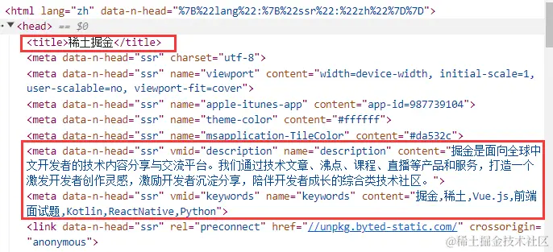
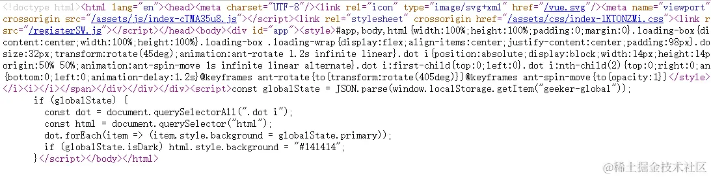
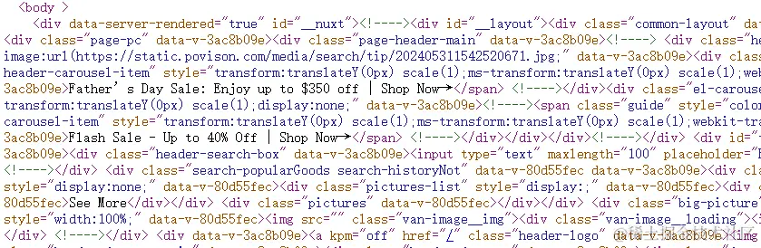
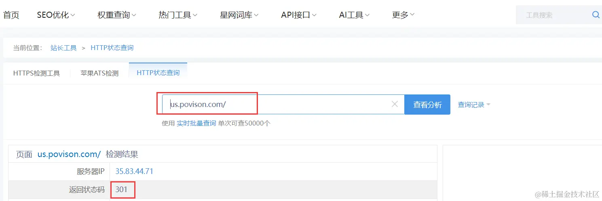
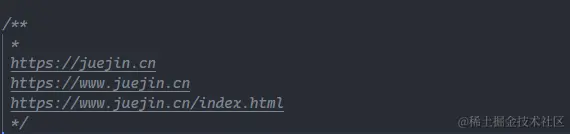
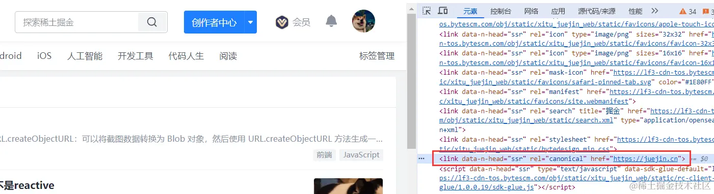
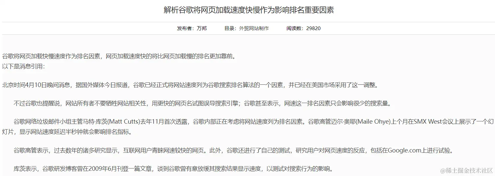

2024-07-04 20:05:14 · YinHao
SEO 是 Search Engine Optimization 的缩写，即搜索引擎优化。它是一种通过调整网站的内容、结构、外部链接等方面的优化手段，来提高网站在搜索引擎中的自然排名，以求得获得更多的流量，从而达到互联网营销及品牌建设的目标。
作为一名前端工程师，掌握一些 SEO 的相关知识是很有必要的，本文主要介绍 SEO 的优化手段，分为三大类，全方位的把 SEO 做到极致 🌻！
TDK 是 Title(标题)、Description（描述）和 Keywords（关键词）的缩写，TDK 是一个网站 SEO 的核心。
因为滥用等原因，目前各大主流搜索引擎基本都已经降低甚至移除了 keywords 对排名的影响，TDK 的设置如下：
<title>标题</title>
<meta name="description" content="描述" />
<meta name="keywords" content="关键词" />
当然这三者的内容是有一定要求的，比如字符数长度的限制，想详细了解的小伙伴可以自行查阅，下面看下掘金网站的 TDK：
Meta 标签是网页 head 区的辅助性标签，它的作用是经过配置一些参数用以描述页面属性，目前几乎所有搜索引擎都使用网上机器人自动查找 Meta 值来给网页分类。Meta 标签的 name 属性有以下配置项：
我们在开发的时候习惯性的通篇使用 div 和 span，这样其实是不利于 SEO 的，需要慢慢养成使用具有语义化标签的习惯，HTML 语义化有利于 SEO，使得搜索引擎更容易理解语义化页面的内容结构和主题。下面介绍一些常见语义化标签的使用以及注意事项：
标题标签： h1、h2、h3、h4、h5 和 h6，一个页面中最好保证只有一个 h1 标签，其他的标签根据实际情况使用
强调标签： strong、em，一方面是强调（加粗/斜体），增加了权重；另一方面增强视觉效果
图片标签： 使用时加上 alt 属性对图片进行描述，可以帮助蜘蛛快速理解图片的具体内容
段落标签： 页面中段落文字可使用 p 标签替代
列表标签： ul、ol、li，搜索引擎能够通过这些标签更好地理解信息的层次结构和关联性，从而更准确地评估网页的内容和价值
布局标签： header、nav、article、section、aside、footer，根据页面的区域模块划分选择对应的布局标签
Open Graph 协议可以让任何一个网页集成到社交图谱中。例如，你的网页集成了 Open Graph 协议，按照协议加入了网页的标题，描述以及图片信息等，那么在 facebook 中分享这个网页的时候，facebook 就会按照你定义的内容来展示这个网页。
这个协议其实很简单，主要是通过在 html 中加入一些元数据（meta）标签来实现，property 属性以 og 开头，后面跟着具体属性，content 里面是属性的值，来看个案例：
<html prefix="og: http://ogp.me/ns#">
<head>
<title>The Rock (1996)</title>
<meta property="og:title" content="The Rock" />
<meta property="og:type" content="video.movie" />
<meta property="og:url" content="http://www.imdb.com/title/tt0117500/" />
<meta
property="og:image"
content="http://ia.media-imdb.com/images/rock.jpg"
/>
...
</head>
...
</html>
总的来说：这个协议主要是 Facebook 提出来的，为了更好的展示用户分享的网页的内容，实现这个协议，有助于 SEO 优化，告诉 google 该网页有哪些内容，以及关键词等。
设置 HTML 标签的 lang 属性主要用于指定网页内容的语言。这个属性对于搜索引擎优化（SEO）是有益的，因为它帮助搜索引擎了解页面内容的语言，从而能够更准确地将页面呈现给搜索特定语言内容的用户。
对于国际化的项目，设置 lang 属性很有必要，搜索引擎能够将页面准确地展示给搜索相应语言的用户。
在 Vue3 + Nuxt3 项目中设置 lang 属性，同时页面切换语言时重新设置，代码如下：
由于爬虫只能抓取到网页的静态源代码，而无法执行其中的 js 脚本，当网站采用 Vue 构建的单页面应用时，实际上是采用客户端渲染的方式，页面上的大部分 DOM 元素是在客户端通过 JavaScript 动态生成的。
客户端渲染的过程是需要时间的，爬虫不会等你渲染好，因此爬虫能够直接抓取和分析的内容会大幅减少。下面来看下客户端渲染和服务端渲染网页源代码的区别：
客户端渲染的网页源代码：
服务端渲染的网页源代码：
通过这两张图很明显可以看出，服务端渲染源代码的 body 里面是有很多标签元素的，这是因为在服务端时已经生成较完整的 html 代码，想深入了解服务端渲染可以参考我的另一篇文章 服务端渲染 SSR 、最核心的同构渲染
当网站采用服务端渲染的方式，蜘蛛去爬取网站源代码时，可以获取到更多的内容，有利于 SEO 的优化。现在很多的官网项目都已经采用 Vue + Nuxt 来实现，服务端渲染已经成为了一种趋势！
Sitemap，即站点地图，它是一个网站的全部 URL 列表，它的作用是向搜索引擎提供关于网站的信息，帮助搜索引擎更好地索引网站内容，提高网站在搜索结果中的排名，为了保证链接的全面性和准确性，应该自动不定期更新 sitemap 站点地图。
sitemap.xml 文件内容格式大致如下：
<?xml version="1.0" encoding="UTF-8"?>
<urlset xmlns="http://www.sitemaps.org/schemas/sitemap/0.9">
<url>
<loc>https://www.example.com/</loc>
<lastmod>2023-04-26T18:23:17+00:00</lastmod>
<changefreq>daily</changefreq>
<priority>1.0</priority>
</url>
<url>
<loc>https://www.example.com/about</loc>
<lastmod>2023-04-25T10:12:14+00:00</lastmod>
<changefreq>monthly</changefreq>
<priority>0.8</priority>
</url>
</urlset>
在这个示例中，每个 URL 元素代表网站中的一个页面，其中 元素包含页面的 URL 地址， 元素包含页面的最后修改时间，元素包含页面的更新频率，元素包含页面的优先级。
Sitemap 文件通常位于网站的根目录下，网站管理员可以在各个搜索引擎的站点平台提交 sitemap.xml 文件，以帮助搜索引擎更好地索引网站内容，例如：www.example.com/sitemap.xml
搜索引擎通过网络爬虫来索引网站内容，爬虫会首先访问网站的 sitemap.xml 文件，获取网站中所有页面的链接。搜索引擎会根据 sitemap.xml 文件提供的信息来判断页面的更新频率、优先级等，进而决定何时重新爬取网站页面，以保证搜索结果的准确性和时效性。
蜘蛛在访问一个网站时，会首先会检查该网站的根域下是否有一个叫做 robots.txt 的纯文本文件，这个文件用于指定 spider 在您网站上的抓取范围，掘金的 robots 文件：https://juejin.cn/robots.txt
robots.txt 文件由键值对组成：其中 User-agent 用于描述搜索引擎蜘蛛的名字；Disallow 用于描述不希望被访问到的一个 URL，一个目录或者整个网站，具体的用法如下：
*网站目录下所有文件均能被所有搜索引擎蜘蛛访问*
User-agent: *
Disallow:
*禁止所有搜索引擎蜘蛛访问网站的任何部分*
User-agent: *
Disallow: /
*禁止所有的搜索引擎蜘蛛访问网站的几个目录*
User-agent: *
Disallow: /haha/
*只允许某个搜索引擎蜘蛛访问*
User-agent: Googlebot
Disallow:
该文件中还可以配置 Sitemap 属性，用于提供网站 sitemap 的 URL 地址，帮助搜索引擎爬虫更有效地发现和索引这些页面：
User-Agent: *
Disallow: /private/
Sitemap: https://xxxx.com/sitemap.xml
在项目中我们只需将 robots.txt 文件上传到网站根目录就行了，注意文件名一定要全小写，然后通过 域名/robots.txt 进行访问。
在搜索引擎优化领域，有着内链为王、外链为皇的说法，它们都能对提升网站排名有所帮助，尤其是外链的建设。
内链：从自己网站的一个页面指向另外一个页面，通过内链让网站内部形成网状结构，让蜘蛛的广度和深度达到最大化。
外链：在别的网站导入自己网站的链接，通过外链提升网站权重，提高网站流量，同时需要注意外链的质量，低质量的外链反而会影响到本站的排名。
另外，在添加内链外链的过程中，要注意 a 标签中 rel 属性（用于指定当前文档与被链接文档的关系）的使用，下面来看下 nofollow 和 external 两个值的用法。
<a rel="nofollow" href="http://www.baidu.com/">百度</a>
<a rel="external" href="http://www.baidu.com/">百度</a>
nofollow：会告诉搜索引擎忽略这个链接，阻止搜索引擎对该页面进行追踪，从而避免权重分散
external：会告诉搜索引擎这是一个外部链接，非本站的链接
301 重定向表示本网址永久性转移到另一个地址，302 表示临时重定向。
301 重定向与网址规范化有着类似的作用，它还具有集中域名权重的作用，比如 url1 重定向到 url2，其实是把 url1 的权重转移到了 url2，从而增加 url2 域名的权重。
虽然 canonical 标签可以规范化网址，但是以下四种情况必须配置 301 重定向：
那么如何验证 301 重定向是否生效呢？可以使用站长工具 HTTP 状态查询 查看返回的状态码是否为 301：
在 Vue3 + Nuxt3 项目中实现 301 永久重定向：
return navigateTo(localePath(`xxxxxxxx`), {
redirectCode: 301,
});
结构化数据是 HTML 中标记数据的方式，有助于搜索引擎理解网站内容并引导更高质量的搜索结果，搜索引擎可以知道您的页面包含哪些信息以及如何将其呈现给用户。
比如搜索掘金出现的页面，红色框部分就是结构化标记的成果，从框内可以更好的了解该网站的内容，而且占据了大版面也有利于吸引用户注意。
JSON-LD 是结构化数据的一种形式，书写形式可以参考下面的这段代码，更多的 JSON-LD 款式可以参考 JSON-LD
<script type="application/ld+json">
{
"@context": "https://schema.org",
"@type": "NewsArticle",
"headline": "Title of a News Article",
"image": [
"https://example.com/photos/1x1/photo.jpg",
"https://example.com/photos/4x3/photo.jpg",
"https://example.com/photos/16x9/photo.jpg"
],
"datePublished": "2015-02-05T08:00:00+08:00",
"dateModified": "2015-02-05T09:20:00+08:00",
"author": [
{
"@type": "Person",
"name": "Jane Doe",
"url": "https://example.com/profile/janedoe123"
},
{
"@type": "Person",
"name": "John Doe",
"url": "https://example.com/profile/johndoe123"
}
]
}
</script>
如果一个页面有多个不同的 URL 地址，但是返回的都是同一个页面，这就是不规范网址，比如下面三个 url 不同，但是打开后是同一个页面：
无论是对搜索引擎还是网站来说，多个 URL 为相同页面，浪费了抓取资源，可能会出现网站重复页面过多一类的因素导致影响收录甚至降权。网页规范化能够解决无意义收录的问题，而且有利于 URL 权重集中。 那么如何实现网址规范化呢？其实很简单，只需在页面的 head 标签中，加入 canonical 属性：
<link rel="canonical" href="https://www.xxxxxx.com/" />
掘金网站设置的 canonical 属性：
谷歌曾发公告表示，使用 HTTPS 是搜索引擎排名的一项参考因素，HTTPS 站点相比于 HTTP 站点，能获得更好的排名。
除了 robots.txt + sitemap.xml 方式增加网址被收录的可能性外，还可以在各搜索引擎站长平台手动提交网址，以缩短爬虫发现网站链接时间，加快爬虫抓取速度，以下提供几个搜索引擎站长平台：
后期维护需要一定的网站访问数据做分析，比如流量来源，页面点击等，不同的搜索引擎都有自己的一套分析工具，通过这些工具可以帮助我们分析整个网站的流量情况，然后再做出对应的调整。
目前谷歌已经将网页加载速度的快慢作为影响排名的重要因素：
简单来说，网站性能越好，网站打开速度的就越快，识别效果越好，爬虫会提高对该网站的爬取效率；反之爬虫会认为该网站对用户不友好，降低爬取效率。
丰富网站的内容其实也是有助于 SEO 的，但不是直接作用，而是长期的累积带来的效果。比如网站的博客页面，我们可以考虑丰富其内容，让其足够的吸引用户，这样可以提高网站的点击率/阅读量，也就是提高网站的曝光率，同时要持续发布更新引流文章。久而久之，搜索引擎会更加青睐我们的网站，最终有助于 SEO。
给大家推荐一些与 SEO 相关的工具/网站，帮助我们在 SEO 优化的过程中提升效率，解决烦恼！
以上便是我对 SEO 优化手段的总结，如果存在错误的地方，或者还有其他的优化方式，大家可以提出，我会继续修改/补充上去，使得整个 SEO 体系更加的完善。
本文参考借鉴以下的文章：